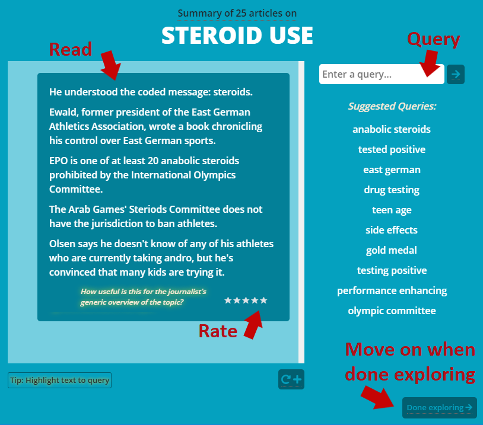

This is a practice task that will guide you through the interactive process that you will have to perform. The purpose is for you to get to know the system and understand the goal of the task. The guiding comments will not appear in the real task.
Task: Interactively explore a topic using this text exploration system. Through the system you will produce an informative summary draft text which a
journalist could use to best produce an overview of the topic.
📰
Task instructions:
- Read and rate: Read 🧐 the initial summary presented, and rate ⭐ how useful the information presented is.
- Query and rate: Query ❓ the system for additional information to expand your topic summary. Rate ⭐ the novelty and usefulness of the information just added.
- Wrap-up: Once you have finished querying and exploring, move on to the questionnaire 📋, in which you will mark the statements that can be found in the text you've produced.
Your
main challenge is to
issue a sequence of queries that will expand the information in the best way.

Start